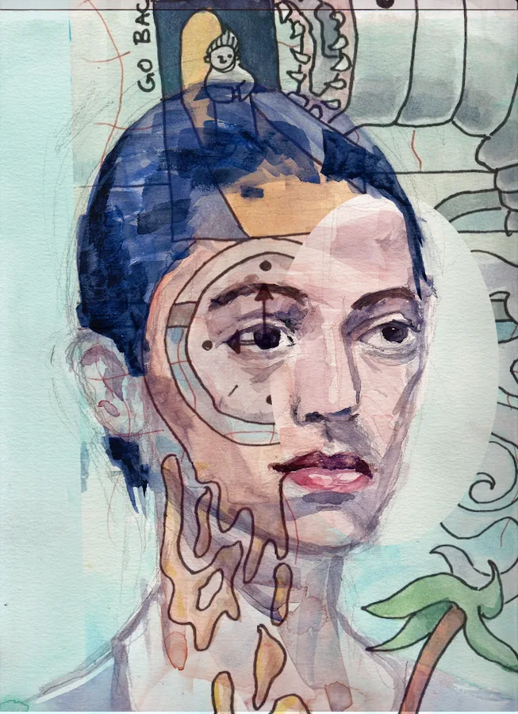
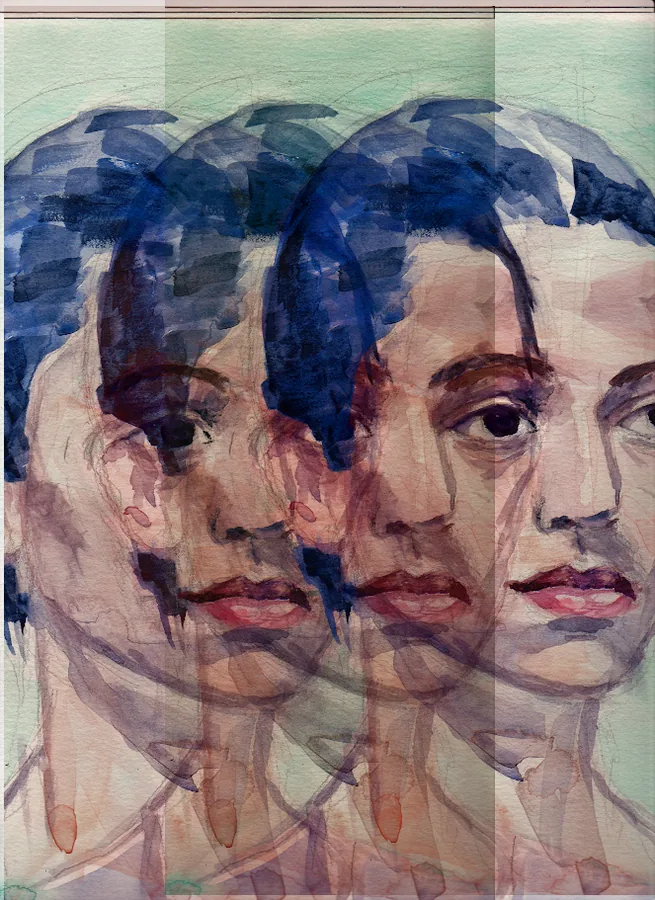
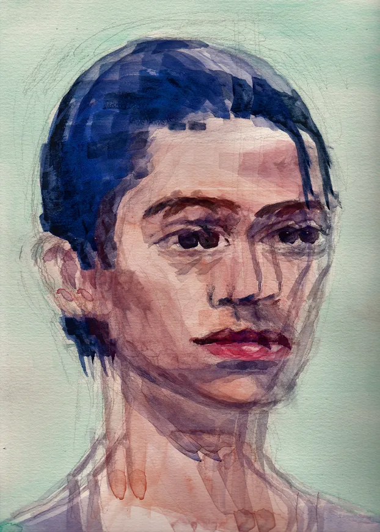
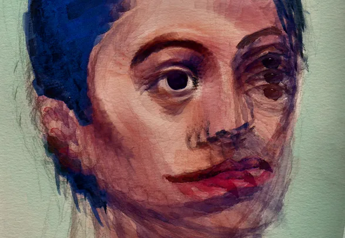

Layer Stamps
I turn my paintings into see-through layers: the white paper disappears and the paint stays, so layers stack like washes of watercolor. Pick a layer, then click or tap the page to stamp it. Stack a few and see what happens.
Click or tap to stamp · drag to erase · Ctrl+Z to undo
Layers
Tool
Stamp
Paper
Some of mine




How it works
Each pixel is checked for how much paper is showing through. Pure white paper becomes fully see-through, and the paper's light is subtracted from everything else, so the ink keeps its real color. It's a small Python script I wrote; this page runs the same steps in your browser. A drawing you add stays on your device and is never uploaded.